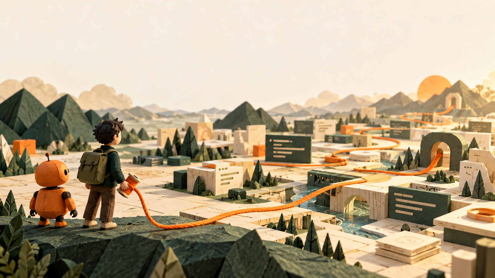
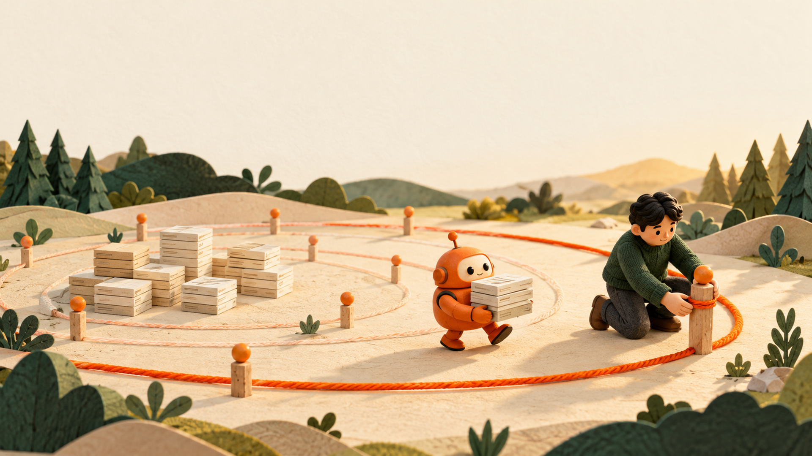
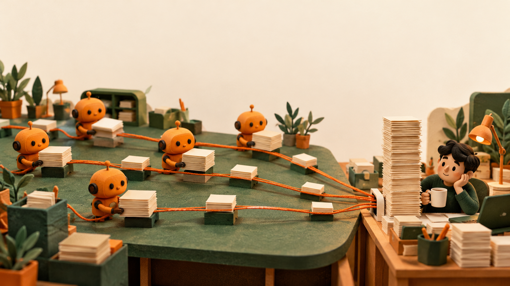
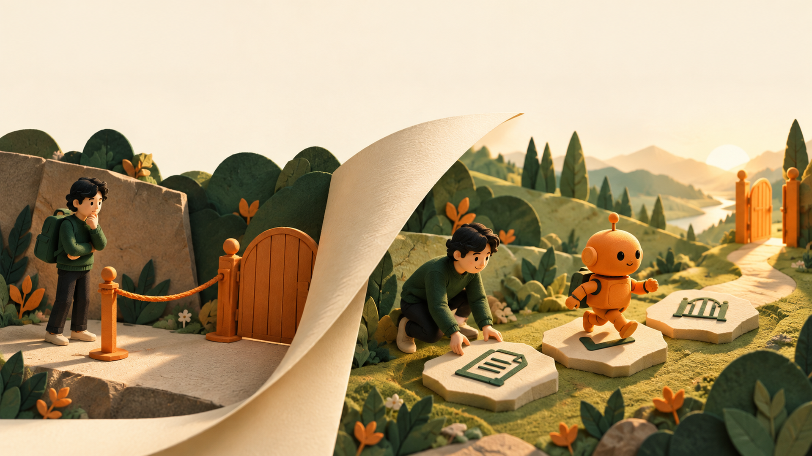
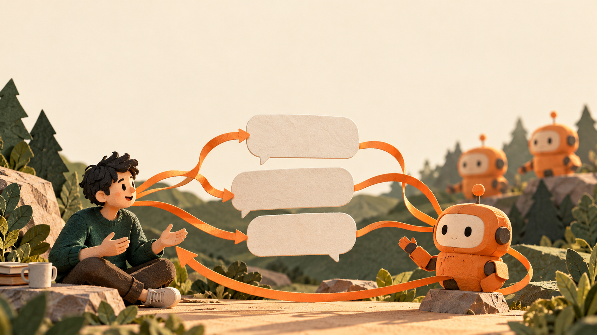
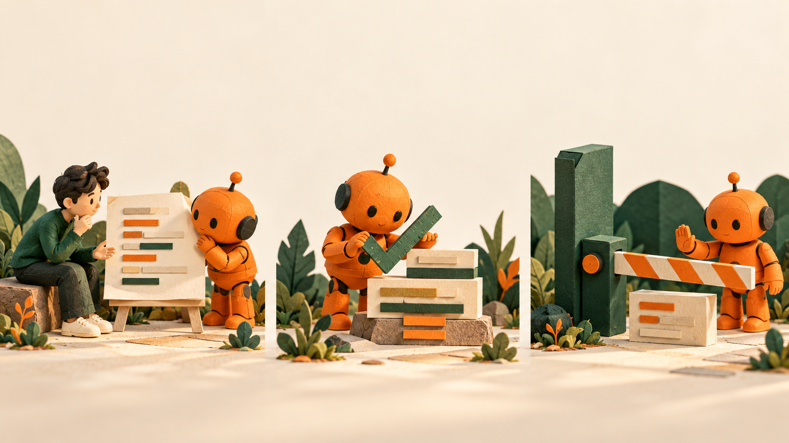
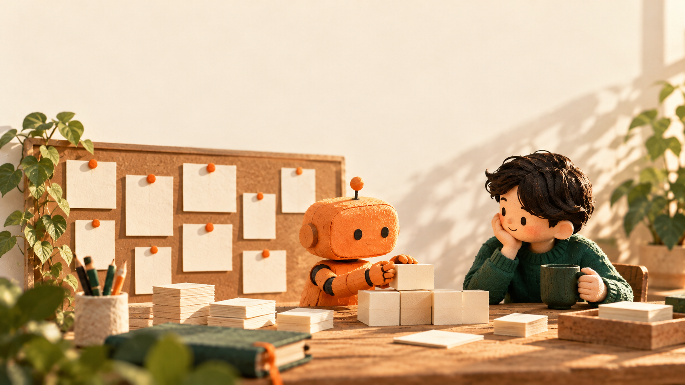
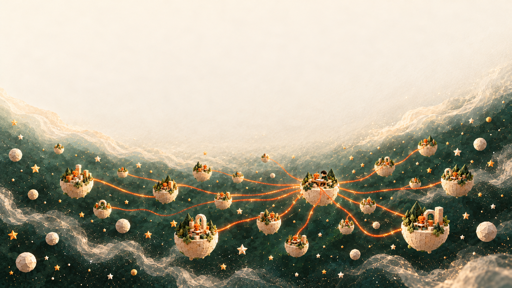
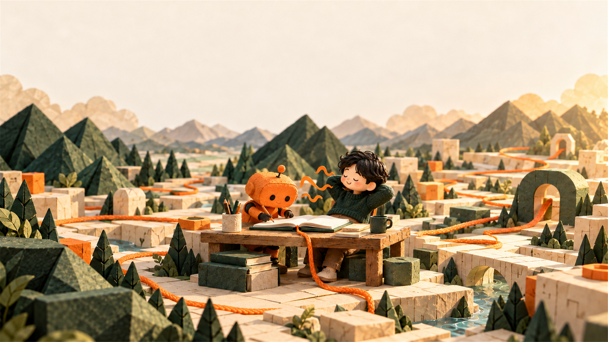

AI한테 어디까지 맡겨도 될까?

선은 정하는 게 아니라 옮기는 것

병목이 옮겨 왔다

어디까지 맡겨도 되나
맡길 수 있게 무엇을 준비해 뒀나

매번 하는 말
"커밋 메시지는 이렇게 써"
"이 폴더는 건드리지 마"
"끝내기 전에 테스트 돌려"

CLAUDE.md 한 줄
테스트
hook

매번 말한다 → 적어 둔다


근데 솔직히,
적는 것도 귀찮다
그래서 적는 것도 맡겼다